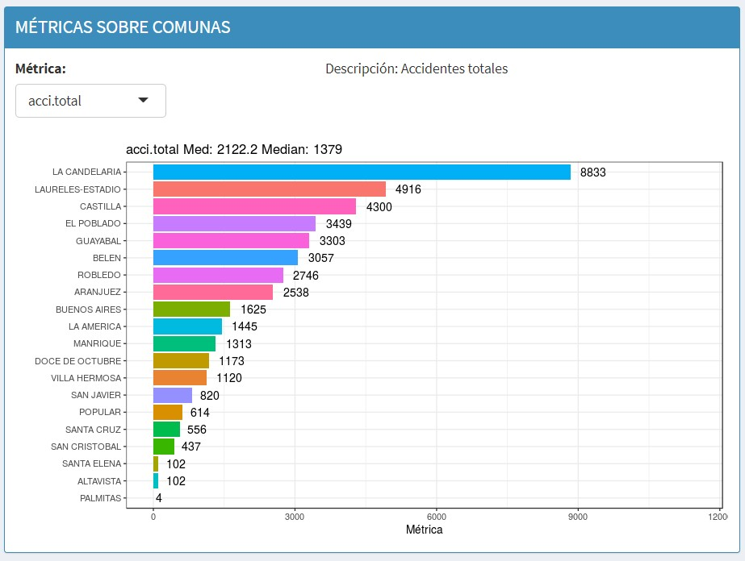
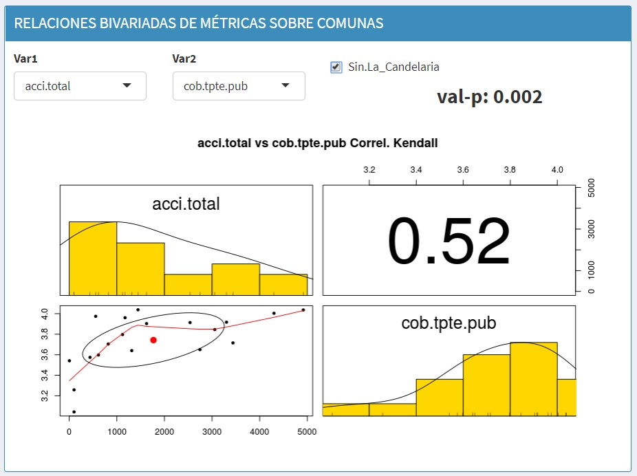
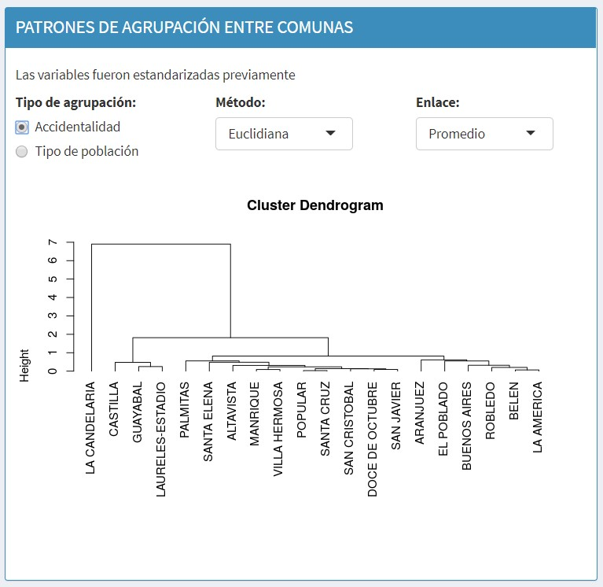
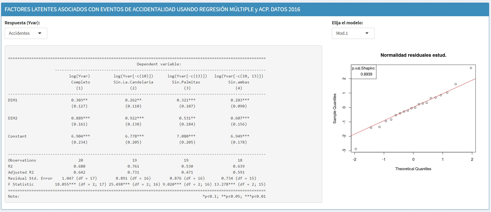

Viewer's Choice Presentation
Back to Homepage
1. Introduction
This visualization depicts traffic accident data in the city of Medellín, Colombia between 2014 and 2018. The visualization was built by Jorge Iván Pérez Rave of the Colombian consulting firm IDINNOV, seemingly as a demonstration of their data visualization capabilities.
2. Data
This data is sourced from the Colombian national government (datos.gov.co) and Medellín city government (medellin.gov.co), specifically the GEO Medellín Project. The visualization does an exemplary job of citing sources not only for the data used, but also for code and libraries used for the construction of the site. There is little information, however, of how this data was processed to produce the graphs shown.
3. Visualization Critique
"GRAVEDAD DE LOS ACCIDENTES VIALES" - GRAVITY OF ROAD ACCIDENTS
This is a bar graph showing the relative proportions of traffic accidents, divided into the categories "Herido" - Injuries, "Solo Daños" - Only damage (i.e. no injuries), and "Muerto" - Deaths.
Good:
- Good use of color to indicate severity of accident - blue for least bad, red for most bad, orange in the middle.
- Good use of labels - shows overall number and percentage listed.
Bad:
- Order of bars should go from least bad on the left to most bad on the right
- Graph allows user to choose "Day, Month, Year" above the graph. It is unclear what this is for - to show average by day, rather than by year? Does not add to understanding of data.
"SEGMENTACIÓN DE ACCIDENTES VIALES" - SEGMENTATION OF ROAD ACCIDENTS
Several graphs are concealed by a dropdown menu here, labeled "Segmentos" - Segments.
The first segment is "Hours". It took me a long time to understand what was happening in this graph. This is a horizontally oriented bar graph in which the vertical axis represents hour of the day - bars representing the percentage of accidents which take place at that hour of the morning extend to the left, and for the evening extend to the right, from a central 0 axis.

Good:
Bad:
- The cyclic nature of the data is obscured by the presentation. It is easy to compare, for example 1 AM with 1 PM, but this is not a useful comparison.
- The horizontal axis is marked seemingly at random - for the default "Everyone" grouping (which shows all accidents, regardless of severity), the numbers start at 1540 on the left, descend to 120, then climb again to 2880. The 0 line should be clearly marked, and markings should move outward from it at regular, sensible intervals.
- There appears to be a spike in accidents at "12 PM", and a sudden drop at "12 AM". This is because the developers of this graph have neglected that "12 PM" is in the afternoon, and "12 AM" is at night - this bar belongs at the bottom of the graph, rather than at the top.
One of the more interesting graphs in this section is a bar graph of accident frequency by type of street or intersection. It appears from this data that the vast majority of accidents occur in locations of the category "Tramo de via" - tramway or train tracks.
Good:
- Colors would not be meaningful in this graph, so the graph keeps them consistent. (The light grey is a bit hard to read, though).
Bad:
- I am suspicious of just how much higher the accident figures are for train lines.
- There is no indication of whether this data has been normalized by the number of such intersection around the city - i.e. it is unclear whether the lower frequency of accident for "Glorieta" (roundabout) is lower than "Interseccion" (intersection), simply because there are fewer roundabouts than intersections, or because roundabouts are in fact safer than intersections.
"MAPA DE ACCIDENTALIDAD" - ACCIDENT MAP
The locations of fatal accidents are marked on a map. From the map, it appears that most fatal accidents take place on major streets.
Good:
- It is valuable to be able to see this information laid out geographically, especially for those of us unfamiliar with the city of Medellín. From the map we can draw conclusions about the type of streets which seem to have a higher incidence of accident.
Bad:
- There is a parameter labelled "Propor.casos". It is unclear what this parameter controls. The range is between 0.1 and 1, with the number of points plotted on the map increasing as the parameter increases. My assumption is that lower values of this parameter indicate that the map is showing more common accident sites, but this should be made explicit.
- Colors are inconsistent between the first bar graph and this map for each category.
"CALLES Y CARRERAS QUE DESCRIBEN LA ACCIDENTALIDAD"
I find this one of the more interesting graphs in the project. The streets of Medellín are broken up into Calles, which run East-West, and Carreras, which run North-South. This graph treats each Calle and Carrera number as a coordinate, and in so doing normalizes the accident locations into a rectangular grid. This allows us to see quite clearly which streets are the most dangerous, as these appear as straight lines on the graph. However, there are shortcomings of implementation which keep this from living up to its promise.
Good:
- It is clear from the plot which streets are most dangerous. For example, in the given picture we can see that a single Carrera is the location for most of the fatal accidents in the central district of La Candelaria.
Bad:
- The labels are set too far apart - it is very difficult to see from the graph which street a particular accident happened on.
- The graph features a parameter "Zoom", allowing the user to manually increase or decrease the zoom level. This should not be required - the axes should be set so that the maximum and minimum street numbers of a district are the bounds of the graph.
- The graph is less useful for the "Only Damage" category, where every intersection has had an accident. Perhaps color or size could have been used here to indicate frequency of accident at each intersection.
"EVOLUCIÓN DE LA ACCIDENTALIDAD" - EVOLUTION OF ACCIDENTS
This graph shows the total number of accidents by month for the years between 2014 and 2018.
Good:
- The clearest purpose of this graph is to show how the average number of accidents varies by month. We can see that there is an early spike in accidents in March, and a peak in August. This does not appear to be correlated with weather - Colombia is on the equator, and temperatures are consistently in the 70s F / 20s C year round. Peaks in rainfall occur in May and October, which is not reflected in this data. (Source: Wikipedia)
- This graph makes effective use of Plot.ly's mouseover labelling to only show labels when necessary.
Bad:
- The graph does not live up to its name, as it is hard to see any trend between years.
- As with most Plot.ly graphs, the user has the power to completely mess up the image.
MÉTRICAS SOBRE COMUNAS - Metrics By Commune
This is a set of graphs which break up the city of Medellín into its constituent communes, or neighborhoods. The metric being graphed is chosen with a dropdown menu. To the non-Spanish speaker, these labels range from cryptic to completely indecipherable, a valuable reminder of the accessibility cost of nonstandard abbreviation, but fortunately a fuller description of most graph are available after selecting them.

Good:
- The graphs showing the number of accidents relative to the population of each district are particularly valuable. From this, we can see that the central district of La Candelaria has by far the highest proportion of accidents per capita, which makes sense as this is not a residential district.
Bad:
- Colors are not consistent between graphs in this category - the same colors appear in the same order regardless of which order the communes are in. It would be better if each commune were assigned a color, which would make comparisons easier between metrics.
- The way these graphs are broken up such that only one is visible at a time makes them difficult to compare. For example, it might be interesting t see separate bars for accident severity (injury, damage only, fatal) graphed on the same plot, but instead these are three separate plots.
- Some of the graphs in this category are completely uninteresting. For example, the gender proportion by commune is irrelevant to the topic of the visualization (or at least no argument for relevance is put forward).
- Several of the graphs in this category rank the communes on a scale from 1 to 5, e.g. "Comuna en términos de cobertura de transporte público (1. Muy mal,…, 5. Muy bien)" - "Commune in terms of public transport coverage (1. Very bad, ..., 5. Very good)". It is unclear whether this is survey data, and if so from what source, or if this has been calculated from geographic data. In any case, it is impossible to correlate this information with the accident data using the given visualizations.
- There are 37 graphs hidden under this dropdown menu. These should be edited down to only the most relevant.
"RELACIONES BIVARIADAS DE MÉTRICAS SOBRE COMUNAS" - Bivariate Relations of Metrics By Commune
This graph addresses many of the failings of the previous graph by allowing the user to compare any two metrics of their choice. In the upper left is a histogram for variable 1, in the bottom right a histogram for variable 2, and in the bottom left a scatter graph relating the two, with a centroid and some sort of trend line marked. The large number in the upper right is the Kendall rank correlation coefficient, a measurement of assotiation between the chosen variables.
In this picture, I have chosen to graph total accidents against quality of public transport connections. This shows a moderate correlation, which may be explained by the tendency of areas which are well-served by public transportation to also have heavy traffic.

Good:
- There is a checkbox which excludes La Candelaria, consistently the largest outlier across many metrics, from the dataset.
- This is by far the most interactive visualization in the project, giving the user a great deal of power to explore their own hypotheses. This would be a good thing, but...
Bad:
- There is no attempt being made by the authors to draw out interesting conclusions from this dataset. This could have been done by, for example, choosing two variables to start with which show a strong correlation - but the authors left the defaults at the first two variables.
- Labels are missing from the histograms, and unnecessarily present on the Kendall coefficient
- Internal R variable names continue to be used where more descriptive text would aid understanding.
"PATRONES DE AGRUPACIÓN ENTRE COMUNAS" - Patterns of Grouping Between Communes
This is another interesting graph, as it relates not to absolute values or proportions of metrics, but to how similar any two communes are to one another.

Good:
- The graph does an excellent job of showing just how much of an outlier La Candelaria is compared with the rest of the city.
Bad:
- Two options are provided to tweak the graph - the distance algorithm being used (Euclidean, Manhattan, etc), and the aggregation function (average, distant neighbor, etc). This is too much implementation detail for the user - the author should have chosen sensible defaults for the data and indicated how the values were being calculated. The user should not be required to have the background knowledge needed to choose between these options, which have significant impacts on the graph produced.
FACTORES LATENTES ASOCIADOS CON EVENTOS DE ACCIDENTALIDAD USANDO REGRESIÓN MÚLTIPLE y ACP. DATOS 2016 - Latent Factors Associated With Accident Events Using Multiple Regression and Acp. Data 2016
This section is undeserving of the name of visualization. It is a table describing the multiple regression techniques being used, accompanied by a rudimentary line graph. It is very unclear to a lay audience (like myself) what is happening here.

JORNADA Y HORARIOS ASOCIADOS CON EVENTOS DE ACCIDENTALIDAD BAJO ENFOQUE PARETO. DATOS 2014 - 2018_1 (hasta mayo 2018) - Day and Schedules Associated with Accident Events
This section is the only one to break down each category of accident (fatal, injury, damage only) into subcategories, which are very interesting. For example, we can see from this graph that most accidents in La Candelari are caused by "Atropello" (Being run over), followed by "Choque"(Shock), and only a very small proportion being "Otros"(Other). This would seem to imply that most victims of traffic accident are not drivers, but bystanders.

Good:
- Valuable breakdown of data into subcategories
- Users can explore by Commune, Severity, and Year
Bad:
- The use of the same colors between categories is confusing.
- The graphs rehash much of the same information as the earlier hours graph (but better). Only one of these two should have been given.
4. Conclusion
I would not hire this firm. Despite some innovative presentation, details are consistently neglected, and data is presented without meaningful conclusions being offered.